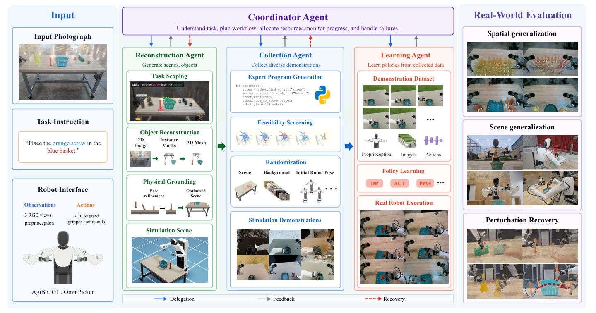
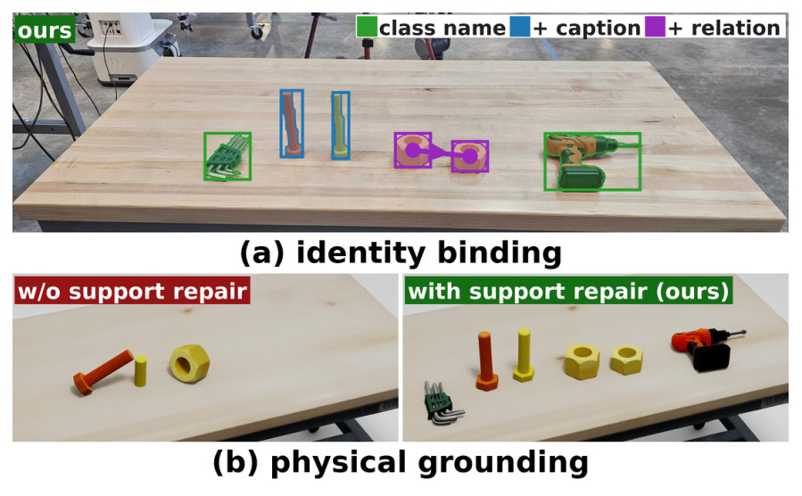
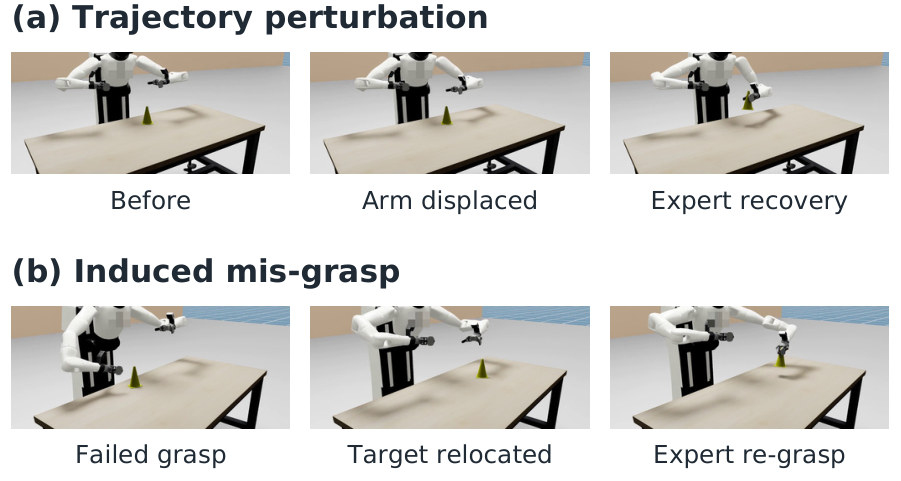
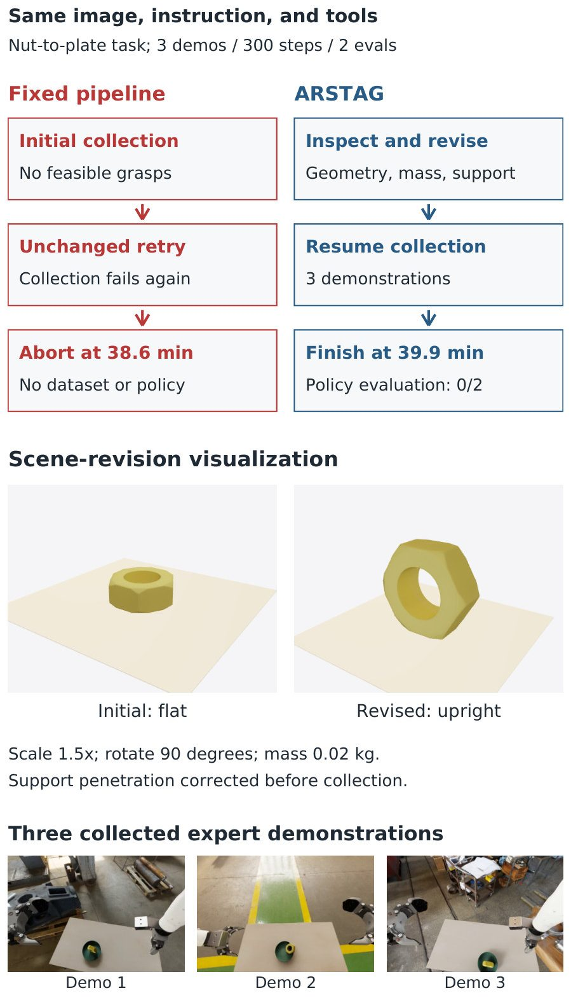
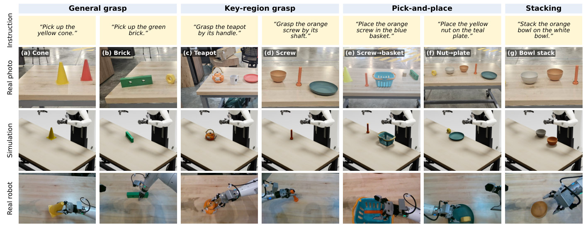
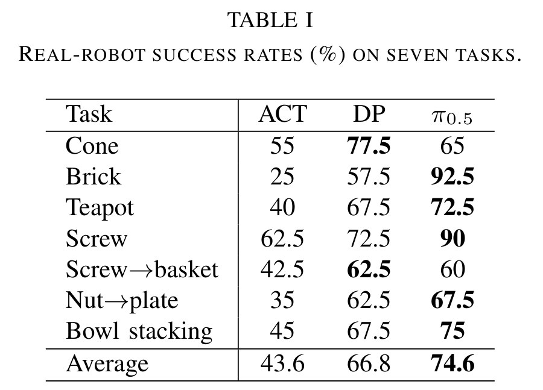
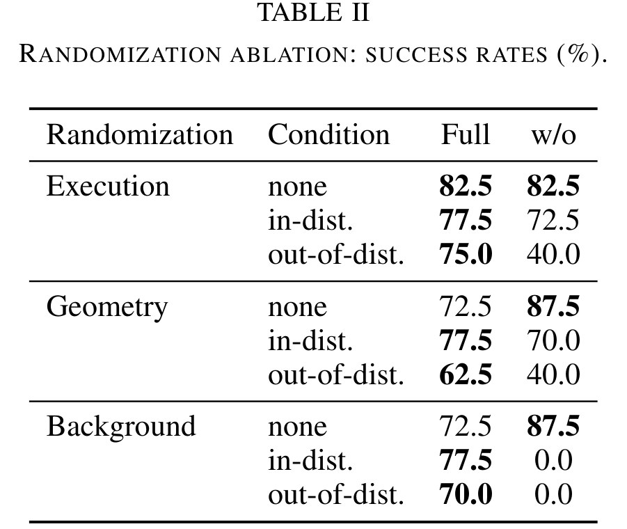
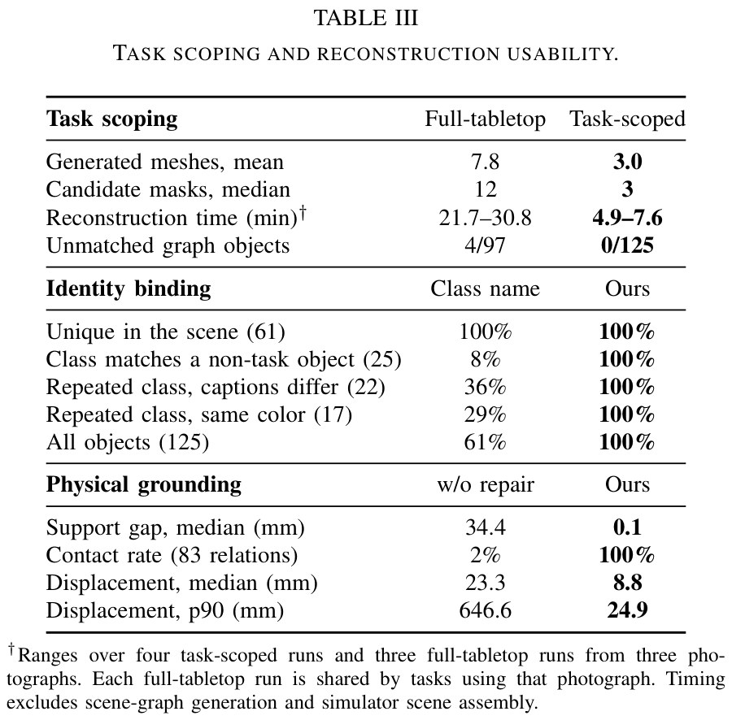
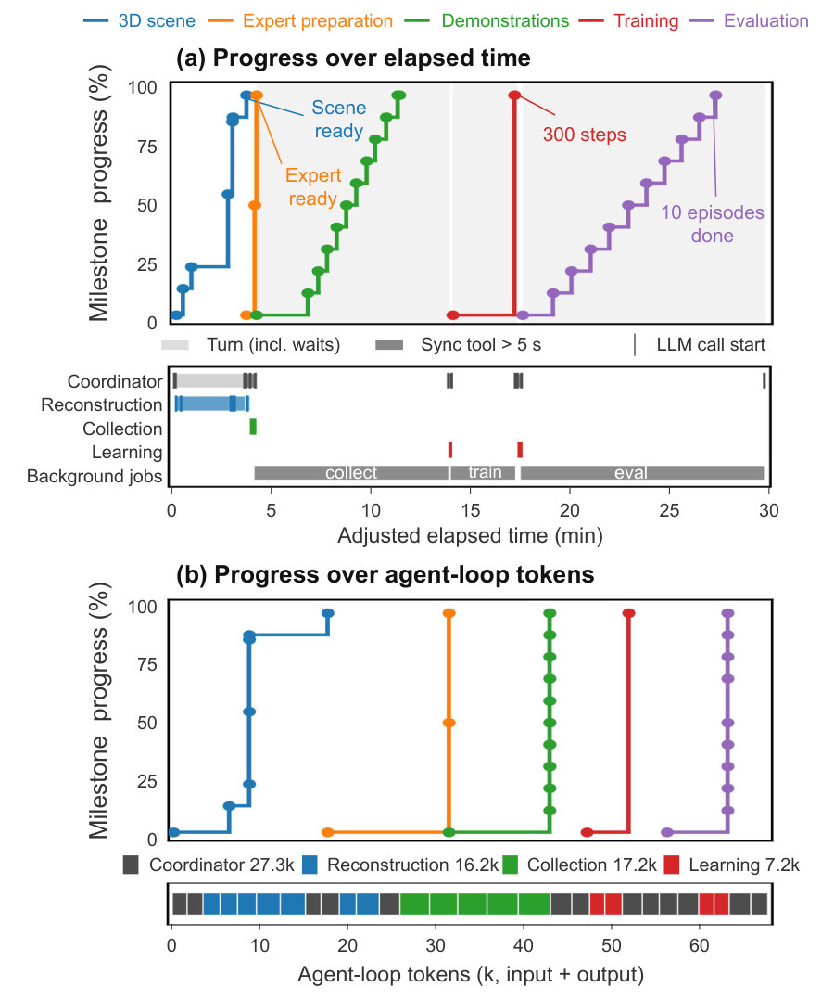
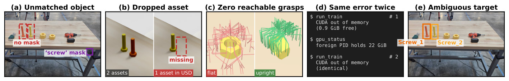

Agent-centric-real-to-sim · 归档于 2026-11-16
ARSTAG
ARSTAG: An Agentic Real2Sim2Real System for Task-Specific Robot Data Generation
归档到 Agent-centric real-to-sim：一张照片 + 一句指令，由 coordinator 带三个 LLM agent 建出只含任务物体的 Isaac Sim 场景、写 expert、配随机化并产出训练数据，正是这个方向；agent 分工和跨 stage 修复对 Robotic harness 也有参考。截至 2026-11-18 项目页只链了网站源码（github.com/boweili666/ARSTAG），没有系统代码。
TL;DR
- Problem
- 教机器人一个新任务要数据；sim 能量产，但每个任务都要人决定：重建哪些物体、写什么 expert、怎么随机化、失败了改哪一步。
- Idea
- GPT-5.5 的 coordinator 把这些决定分给重建、采集、学习三个 agent；agent 只做决定，分割、3D 重建、support repair、抓取生成与筛选、Isaac Sim 采集、训练都是固定工具；工具的具名报错由 coordinator 送回该负责的 agent。
- Result
- 7 个真机任务各 40 次：π0.5 平均 74.6%，DP 66.8%，ACT 43.6%（Table I）；注入 5 类工具故障，带 operating rules 的 agent 50/50 达标，去掉规则 23/50，固定链 10/50（§IV-E）。
Problem
工具都现成，难在每个新任务的决定：重建什么、抓哪里、怎么随机化、出错改哪一步
Running example · 后面每个 stage 都跟着它走
Screw→basket（Fig. 1、Fig. 2(e)）：一张工作台照片 水瓶、黄色 cone、橙色 screw、蓝色 basket、木块、绿色 brick + 指令 "Place the orange screw in the blue basket." → 想要：不靠人遥操作，在 Isaac Sim 里生成 1000 条成功 demo，训出能在 AgiBot G1 双臂机器人上跑的 policy（ACT / DP / π0.5）。
例子延伸：论文没在这个任务上记录跨 stage 修复，那一步用同一套系统做第二个 pick-and-place 任务 (f) "Place the yellow nut on the teal plate." 的记录（§IV-E）。
flowchart LR IN["照片 + 指令
screw → basket"]:::example IN --> A1["A · 全桌面重建
桌上物体全部建"] A1 --> AX["慢 3.1–6.1×
21.7–30.8 min
本文 4.9–7.6 min"]:::gap IN --> B1["B · 按类名取 mask
取第一个匹配的"] B1 --> BX["绑错实例
准确率 61%"]:::gap IN --> C1["C · 不做支撑对齐
底面不贴支撑面"] C1 --> CX["basket 歪、screw 倒
接触率 2%
p90 位移 646.6 mm"]:::gap IN --> D1["D · 固定工具链
失败就原样重试"] D1 --> DX["0 条 demo
38.6 min 中止
故障测试 10/50"]:::gap
A–C 的数字是 Table III 对 42 个 task-scoped 场景、12 个全桌面重建的汇总，不是这张照片单独测的。本例照片里 screw、basket 各只有一个，B 的断点出现在多实例照片（如 Fig. 4 的两根 screw）；C 是 Table III 的 w/o repair：只去掉最后的竖直对齐，调平和修正传递都保留，现象就是 Stage 3 里项目页的 screw–basket 对比视频；D 是 task (f) 扁 nut 的记录（Fig. S6）和注入故障测试（§IV-E）。断点都来自论文 §IV-D、§IV-E 的分析，没有推断。
根本问题：这些决定随任务而变，人来做费时，固定流水线做不了；下游的失败（抓不到）根源常在上游（场景）。 这篇的切入点：LLM agent 只做决定（选物体、配 mask、写 expert、配随机化、派修复），重活交给固定工具，工具的具名诊断把失败送回该负责的 agent。
Related work
| 相关工作 | 解决什么 | 怎么解决 | 和本文的区别 |
|---|---|---|---|
| 同一问题 · 别的解法 | |||
| Real-to-sim-to-real 数据生成（本文所属） RialTo、Re3Sim、SimFoundry、RoboSnap | 真实场景 → 可复用的仿真环境，用来合成数据、做迁移 | 扫描或单图重建整个场景，之后在里面采数据 | 整个场景都建、与任务无关 → task scoping 只建指令涉及的物体（3.0 vs 7.8 个 mesh） |
| 仿真数据引擎 ManiSkill3、RoboTwin | 大规模任务、demo、随机化和评测协议 | GPU 并行仿真 + 预先定义的任务与 expert | 任务和 expert 要人预先写好 → agent 按指令写 expert 程序、配 task-consistent 随机化 |
| 用人类数据后训练 OpenVLA-OFT、RaC、HIL-SERL | 把预训练 policy 适配到部署任务 | 遥操作 demo、人工纠正、真机 rollout | 要人力或部署场景的机器人时间 → 数据全在 sim 里自动生成，后训练（π0.5 LoRA）和从零训都行 |
| 相似做法 · 别的问题 | |||
| Agentic 场景生成 SceneWeaver、SceneSmith | 用 LLM agent 合成 3D 室内场景 | SceneWeaver 看渲染图反馈自我修正；SceneSmith 用优化修碰撞 | 修场景靠渲染反馈或数值优化 → support repair 只用几何变换和 bbox 查询 |
| LLM / agent 驱动机器人 SayCan、Code as Policies、RoboClaw、EnPIRE | 指令 → 技能或代码；长时程执行、恢复、采数据、改进 policy | agent 在线执行或改进机器人行为 | agent 在线控制机器人 → agent 只编排离线数据流水线，看它产出的场景、demo 和数据来评判 |
来源：论文 §II Related Work（A 后训练、B real-to-sim 与数据引擎、C agentic 编排）和 §III-A 里与 SceneWeaver、SceneSmith 的对比；未另行检索。论文没有和这些工作比数字。RialTo、RoboSnap 在 library 里有页面。
Level 1 · Big picture
agent 只做决定，固定工具干活，工具报错由 coordinator 送回该负责的 agent

怎么读这张图
- 左栏 Input：Input Photograph 就是本例照片；Task Instruction 是 "Place the orange screw in the blue basket."；Robot Interface 写明 policy 的接口：Observations = 3 RGB views + proprioception，Actions = joint targets + gripper commands，机器人是 AgiBot G1 · OmniPicker。
- 顶部 Coordinator Agent："Understand task, plan workflow, allocate resources, monitor progress, and handle failures."。底部图例：蓝箭头 Delegation 指向三个 agent，灰箭头 Feedback 三个都有，红虚线 Recovery 只有两段——从 Collection Agent 指回 coordinator，再从 coordinator 指向 Reconstruction Agent，即"抓不到 → 回去改场景"；Learning Agent 没有 Recovery 箭头。
- 绿框 Reconstruction Agent（Stage 1–3）：Task Scoping（task: "put the screw into the basket"，只有 screw、basket、table 上了色，其余标 out of scope）→ Object Reconstruction（2D Image → Instance Masks → 3D Mesh）→ Physical Grounding（Pose refinement → Optimized Scene）→ Simulation Scene。
- 蓝框 Collection Agent（Stage 4–5）：Expert Program Generation（
def run(robot)里find_object("screw")…place_in(basket)）→ Feasibility Screening（一排候选抓取）→ Randomization（Scene、Background、Initial Robot Pose …）→ Simulation Demonstrations（不同背景下的采集画面）。 - 红框 Learning Agent（Stage 6）：Demonstration Dataset（Proprioception、Images、Actions）→ Policy Learning（DP、ACT、Pi0.5）→ Real Robot Execution（本例的 basket）。
- 右栏 Real-World Evaluation：Spatial generalization（真机上采样的物体位置）、Scene generalization（换场景）、Perturbation Recovery（人挪动物体后的恢复）。
flowchart TD I["Input
照片 + screw→basket"]:::example --> A["Coordinator + 3 个 agent
GPT-5.5 只做决定"] A -->|调用| T["固定工具
SAM3 · SAM 3D
GraspGenX · Isaac Sim
训练脚本"] T -->|结果 / 具名报错| A T --> O["Output
1000 条成功 demo
真机 DP 62.5% · π0.5 60%"]:::win
Level 2 · Stages
6 个 stage 分属三个 agent，coordinator 在它们之间派活、派修复
flowchart TD CO["Coordinator
派活 · 收报告 · 派修复"] CO --> RH["Reconstruction agent"] CO --> CH["Collection agent"] CO --> LH["Learning agent"] RH --> S1["1 · Task grounding
screw · basket · table"] S1 --> S2["2 · Identity binding
3 个 mask，一对一"] S2 --> S3["3 · Physical grounding
screw 立住、basket 放平"] CH --> S4["4 · Expert + 筛抓取
pick → place_in"] S4 --> S5["5 · 随机化采集
1000 条成功 demo"] LH --> S6["6 · Policy learning
DP 62.5% · π0.5 60%"] click CO href "#stage-all" click S1 href "#stage-1" click S2 href "#stage-2" click S3 href "#stage-3" click S4 href "#stage-4" click S5 href "#stage-5" click S6 href "#stage-6"
点击 stage 展开 Level 3 细节；点 Coordinator 看 跨 stage 修复。
谁做决定，谁是固定工具（§III、§IV-A）
| Stage | LLM agent 决定（GPT-5.5） | 固定工具执行 | 报回的证据 |
|---|---|---|---|
| 1 Task grounding | 看图和指令建 scene graph：选物体和支撑面、写 caption、选关系 | 无 | 无 |
| 2 Identity binding | 写 SAM3 提示；在编号 overlay 上配 object↔mask；没配上时选重试方式 | SAM3 分割；validator 强制一对一 | 没配上的 object |
| 3 Physical grounding | 调用 assembly；按检查结果决定有界重试；写交接摘要 | SAM 3D；support repair（几何代码）；Isaac Sim 装配 + 重力 settle；机器人摆位 | 空 mask、缺 mesh、退化变换、缺仿真 asset 引用 |
| 4 Expert + 筛抓取 | 写 expert 程序；可把抓取限定到功能区 | GraspGenX；Eq. (1) 碰撞 / 几何 / IK 检查；布局重采样 | 持续失败报给 coordinator |
| 5 随机化采集 | 配置随机化（如分区采样） | 每个 episode 采样、注入扰动；expert 读真值执行和重规划；按成功条件过滤 | 采集结果或失败 |
| 6 Policy learning | 配观测 / 动作接口、转换数据、启动训练和评测 | ACT / DP / π0.5 训练；sim 闭环评测（后台 job） | checkpoint、评测摘要、失败诊断 |
| Coordinator | 派活和交接；按报告定下一步；照 prompt 规则派修复、停止或问用户 | harness：工具权限、参数校验、每轮调用上限；后台 job 的完成事件 | 各 agent 的报告 |
采集期间没有 LLM 在环：expert 程序读 sim 真值执行，collect 是后台 job（Fig. 5）。机器人摆位写在 assembly 段落里，论文没说是 agent 决定还是固定规则，表里按工具算。Token 统计只算 agent loop，不含工具内部的模型调用（§IV-E），论文没列哪些工具内部调了模型。
Level 3 · Details
每个 stage 的细节
Stage 1 Task grounding：按指令建 scene graph 照片 I + 指令 ℓ → typed scene graph G（任务物体 + 支撑面）
- Why：只建任务用得到的几何；全桌面重建平均要建 7.8 个 mesh、配中位数 12 个候选 mask（Table III），更慢，也更容易留下没配上的物体。
- How · Agent：同时看照片和指令；指令决定选哪些物体和支撑面，照片给出它们的外观和空间关系。
- How · Agent：同一张图，"pick up the screw" 只选 screw 和支撑它的 table；"place the screw in the basket" 还要加上 basket（§III-A 原例）。
- How · Agent：每个节点存类别和一句短 caption（给分割用）；每条边的关系取自预定义的空间 / 支撑关系词表。
- 工具：无，这一步就是 LLM 的输出（Table III 的计时不含 scene graph 生成）。
符号表（§III-A）
| 符号 | 白话 | 例子里 |
|---|---|---|
| I, ℓ | 输入的那张 RGB 照片；自然语言指令 | Fig. 1 左上的工作台照片；"Place the orange screw in the blue basket." |
| G = (V, E) | 任务用的 scene graph：节点是物体，边是物体间关系 | 节点 screw、basket、table |
| oi, ci, di | 第 i 个物体、它的类别、给分割用的短 caption | 类别 screw；论文举的 caption 例子是 "yellow plastic screw"（通用例子） |
| (oi, r, oj), 𝓡 | 一条关系边；关系 r 取自预定义词表 𝓡 | 论文没列本例的边 |
flowchart LR a["照片 I + 指令 ℓ
screw → basket"]:::example --> b["Agent 推理
选物体和支撑面"] b --> c["Scene graph G
screw · basket · table"]
Running example 在这一步
Fig. 1 的 Task Scoping 小图：screw（红）、basket（绿）、table（橙）进入 G；水瓶、cone、木块、brick 标 out of scope，后面都不再分割和重建。
Stage 2 Visual grounding：identity binding G 的 caption + 照片 → 每个 graph object 恰好一个 mask
- Why：一个 caption 可能匹配多个实例；同一个 mask 给了两个 object，后面的重建和 demo 就会用错实例。按类名取第一个 mask 只有 61% 正确（Table III）。
- How · 工具 SAM3：用 caption 做开放词汇分割，得到候选 mask m1…mK。
- How · Agent：看照片、scene graph 和带编号的 mask overlay，按外观和空间关系把 object 和 mask 配对。
- How · 工具 validator：强制部分一对一：每个 object、每个 mask 至多用一次。
- How · Agent：对没配上的 object 三选一：改 caption 重新分割；用通用提示 "objects" 再分割；在现有候选里重配。新分出的 mask 并入候选后重新配对。
- 交出：只有配上的 mask 进 3D 重建；agent 报告仍未解决的 object。
flowchart TD a["SAM3 · 工具
按 caption 出候选 mask"] --> b["Agent 配对
看编号 overlay"] b --> c["Validator · 工具
每个 mask 只用一次"] c -->|有没配上的| d["Agent 三选一
改 caption / 'objects'
/ 重配已有候选"] d -->|新 mask 并入候选| b c -->|全配上| e["进 3D 重建
screw · basket · table"]:::win

怎么读这张图
- (a) 绿框 class name：类名就能区分的物体（hex keys、drill）。
- (a) 蓝框 + caption：两根 screw 同类，靠 caption 里的颜色（橙 / 黄）区分。
- (a) 紫框 + relation：两个 nut 同类，靠相对大小加 "left of" 关系区分。
- (b) 属于 Stage 3：左 "w/o support repair"：6 个物体里 3 个落到桌面以下看不见，screw 倒着；右 "with support repair (ours)"：6 个都立在桌上。
Running example 在这一步
这张照片里 screw、basket 各只有一个（Fig. 1），按类名也能配上；Table III 里 "Unique in the scene" 这组两种方法都是 100%。身份绑定要解决的是 Fig. 4 这类照片：两根 screw 靠颜色，两个 nut 靠关系。
Stage 3 Physical grounding + scene assembly 配上的 mask → Isaac Sim 里可交互的场景 S（机器人基座坐标系）
- Why：SAM 3D 的估计误差会让桌子倾斜、物体悬在支撑者上方或陷进去；只去掉最后一步竖直对齐，支撑间隙中位数就有 34.4 mm、接触率 2%（Table III）。
- How · 工具 SAM 3D：每个物体从照片和 mask 重建出 mesh、估计尺度和初始位姿（相机坐标系）。
- How · 工具 geometric pose repair（论文自己的算法，没有 LLM；支撑一致优先于还原照片里的精确布局）：
- 在 G 里没有支撑者的物体（table）：调平、保留朝向，平移到下沿贴地。
- 修正沿支撑边往下传：支撑者挪了多少，被支撑物体跟着挪多少。
- 水平方向重叠的支撑对做竖直对齐：被支撑物体的底面落到支撑者顶面上方一个小间隙处。
- 传递和对齐都做有界轮数的 sweep，没有更新就提前停；不渲染、不做数值优化。
- How · Agent 调用 assembly 工具：asset manifest 把 object 身份对应到 mesh 和修正后的变换；加 rigid-body 物理和碰撞几何；重力下 settle，所有物体线速度、角速度低于阈值或到步数上限就停，保存位姿；摆放机器人（靠近桌子、和桌子及障碍留间隙、偏向相机一侧）；整个场景转到机器人基座坐标系。
- How · 工具检查 → Agent：mask 和 asset 检查找出空或近乎空的 mask、缺失的 mesh、退化的变换、缺失的仿真 asset 引用；agent 据此做有界重试，最后交出场景和摘要（建了哪些物体、哪些没配上）。
符号表（§III-A 的位姿修正）
| 符号 | 白话 | 例子里 |
|---|---|---|
| Mi, Ti(0) | SAM 3D 给第 i 个物体的 mesh 和初始位姿（相机坐标系）；初始位姿之后保持不变 | basket 的 mesh 和它歪着的初始位姿 |
| Ti, Tj | 当前（已修正的）位姿；i 是被支撑物体，j 是它的支撑者 | i = basket，j = table |
| Ti ← Tj(Tj(0))−1Ti(0) | 把支撑者"从初始到当前"的修正原样施加到被支撑物体上，两者相对位姿不变 | table 调平后，basket 跟着做同样的修正 |
| Bi, Bj | 两者的轴对齐包围盒（bbox） | basket 和 table 的 bbox |
| ztop, zbottom | 包围盒顶面 / 底面的高度 | 桌面高度；basket 底面高度 |
| δ | 很小的正间隙；也是判断水平重叠的容差 | 论文没给数值 |
| Δzi = ztop(Bj) + δ − zbottom(Bi) | 被支撑物体要竖直移动的量 | 让 basket 底面落到桌面上方 δ 处 |
flowchart TD a["SAM 3D · 工具
mesh + 尺度 + 位姿"] --> b["Support repair · 代码
调平 → 传递 → 对齐"] b --> c["Assembly · Isaac Sim
物理 + 重力 settle"] c --> d["检查 · 工具
空 mask · 缺 mesh · 缺引用"] d -->|有问题| e["Agent 有界重试
按诊断重做出错的一步"] d -->|通过| f["交接场景 S
基座坐标系 + 摘要"]:::win
Running example 在这一步
SAM 3D 给出 screw 和 basket 的 mesh 和位姿。不修时两者一开始就是歪的，settle 后 screw 倒在桌上、basket 换了位置；修过之后 screw 立住、basket 放平，settle 前后几乎不动（读视频）。全体统计：接触率 2% → 100%，位移 p90 646.6 → 24.9 mm（Table III）。
Stage 4 Expert program + 抓取筛选 场景 S + 指令 ℓ → 读 sim 真值的 expert 程序 + 可行的抓取
- Why：量产 demo 要一个不靠人的 expert；sim 里能直接读真值状态，expert 不用解决视觉感知。
- How · Agent：把指令写成程序：物体状态查询 + 末端执行器的笛卡尔运动 + 夹爪指令（格式沿用 ManiSkillFormer、NeSyPack）。运动目标从当前物体状态算，所以同一段程序能在任意采样布局上复用。
- How · 工具 GraspGenX：预训练模型，以物体点云和夹爪几何为条件给候选抓取，在重建的参考场景里算一次。
- How · Agent：可以把候选限定到功能区，例如 screw shaft（Fig. 5 把这一步叫 key-region annotation）。
- How · 工具 feasibility screening（Eq. 1）：候选按目标物体的采样位姿变换后，只接受同时通过碰撞、几何、IK 三项检查的；程序里能从初始布局算出的路点，也对执行臂做位置 IK 检查。
- How · 工具 layout resampling：单个候选失败不算数；一个都不通过、或必需路点 IK 失败，才拒绝这个布局，在有界次数内重采相关物体位姿。持续失败报给 coordinator，它可以要求重建修正（见 跨 stage）。
符号表（Eq. 1）
| 符号 | 白话 | 例子里 |
|---|---|---|
| 𝓗 = {h1, …, hK} ⊂ SE(3) | 预先算好的候选抓取位姿，按目标物体这次采样的位姿变换过来 | screw 上的候选抓取（数量论文没给） |
| 𝓗test | 实际拿去检查的那部分候选 | 论文没给大小 |
| cscene(h) | 夹爪和参考场景点云是否碰撞 | 夹爪不能撞上 basket 或桌面 |
| cgeom(h) | 工作空间、机身包络、接近方向的间隙是否满足 | screw 要在手臂够得到的范围里 |
| cIK(h) | 预抓取和抓取位姿的 IK 误差是否在容差内 | 执行臂能解出到达 screw 的关节角 |
| 𝓗⋆ | 三项都通过的抓取；为空就拒绝这个布局 | 扁 nut 的初始场景里一个无碰撞候选都没有（§IV-E） |
flowchart TD a["Agent 写 expert 程序
pick → place_in basket"] --> b["GraspGenX · 工具
候选抓取，可限功能区"] b --> c["Eq. 1 筛选 · 工具
碰撞 ∧ 几何 ∧ IK"] c -->|有可行抓取| f["进入采集
Stage 5"]:::win c -->|一个都不行| d["重采布局 · 工具
有界次数"] d -->|一直失败| e["报给 coordinator
见跨 stage 修复"]:::gap
Running example 在这一步
Fig. 1 的程序就是本例：screw = robot.find_object("screw")、basket = robot.find_object("basket")、robot.pick(screw)、robot.move_to_above(basket)、robot.place_in(basket)。论文把它拆成 approach → grasp → lift → transfer → release，目标位置都从当前 screw 和 basket 的状态算（§III-B）。
Stage 5 Task-consistent 随机化 + recovery demo expert + 场景 → 每个任务 1000 条成功 demo（10 Hz，头部 + 两个腕部相机）
- Why：一张照片只给一个布局；要泛化就得扩成分布，但随机化不能破坏任务关系（screw 还得放得进 basket）。
- How · Agent 配随机化（论文原话 "The agent configures randomization"）：抓取类任务的目标在整个工作区均匀采样；pick-and-place 可以把工作区分成左、中、右三块，拿取目标在左右，放置目标在两臂共用的中间。
- How · 工具，每个 episode 采样：物体位姿和干扰物有无、桌子尺寸和偏移、HDRI 背景和光照、相机内外参（在标定值附近）、手臂初始构型和躯干高度。
- How · 工具，控制延迟：每个 episode 随机取延迟 τ（2 到 8 步），执行 τ 步之前的指令，但记录的是不延迟的 expert 动作；延迟缓冲填满前保持第一个目标。
- How · 工具，recovery demo：trajectory perturbation 在接近时推开手臂；target perturbation 在合爪前把抓取位姿偏移并倾斜，造成抓空，物体可能被碰开或被挪走。expert 从新的机器人和物体状态重新规划，完成同一任务。
- 只记续接：扰动本身不进监督，只记录之后的 expert 续接，且满足任务成功条件才保留。这样不用人示范恢复动作，也有"偏离 → 纠正"的数据。
- 无 LLM 在环：采集时 expert 读真值执行，collect 是后台 job（Fig. 5）。
- 三族：Table II 把随机化分成 execution（延迟 + 轨迹 / 目标扰动）、geometry（桌子尺寸 / 偏移 + 躯干高度）、background（HDRI）。
符号表（§III-B）
| 符号 | 白话 | 例子里 |
|---|---|---|
| 𝒲 | 桌面工作区；抓取类任务在里面均匀采样目标 | task (a)–(d) 这类抓取任务用它 |
| 𝒲L, 𝒲C, 𝒲R | 工作区的左、中、右三块：拿取目标在左右，放置目标在中间 | 按规则 screw 在左或右块、basket 在中块；论文没逐任务列出 |
| τ ~ U{2, …, 8} | 每个 episode 均匀随机的控制延迟（步） | 每条 demo 各取一个 |
| qtcmd, qtexec = qt−τcmd | 第 t 步 expert 发出的指令；实际执行的是 τ 步之前那条 | 数据里记的是 qtcmd，不是延迟后的 |
flowchart TD a["Agent 配随机化
pick-and-place 分区采样"] --> b["每个 episode 采样 · 工具
位姿 · 桌子 · HDRI · 相机
躯干高度 · 延迟 2–8 步"] b --> c["Expert 执行 · 无 LLM
读 sim 真值状态"] c -->|注入扰动| d["Expert 重新规划
只记录续接部分"] c --> f["满足成功条件才保留
1000 条成功 demo"]:::win d --> f

怎么读这张图
- (a) Trajectory perturbation：Before → Arm displaced（接近途中手臂被推开）→ Expert recovery（expert 从被推开的状态继续抓 cone）。
- (b) Induced mis-grasp：Failed grasp（偏移倾斜后抓空）→ Target relocated（cone 被挪到别处）→ Expert re-grasp（按新位置重抓）。
- 进数据集的部分：每行只有扰动之后的 expert 续接；"Arm displaced""Failed grasp"这段扰动本身不作监督。项目页同类视频里推开 14 cm、挪走 38 cm（论文没写扰动幅度）。
Running example 在这一步
本例在 Isaac Sim 里采到 1000 条成功 demo，含扰动后的 recovery 续接；pick-and-place 类任务（含 bowl stacking）每条平均 17.3–19.6 s，抓取类 11.3–11.9 s（§IV-A）。
Stage 6 Policy learning + sim 评测 demo D + 指令 ℓ → checkpoint、接口设置、sim 评测摘要
- How · Agent：为每种架构配置观测和动作接口，把同一批 demo 转成各自的格式，三种架构共用一份源数据。
- How · 工具，训练（后台 job）：ACT、DP 各 200,000 步、batch 128；π0.5 在 pi05 base 上做 LoRA 微调，30,000 步、batch 32（Table S1）。最终 checkpoint 直接部署，不做 early stopping，也不按验证集挑 checkpoint。
- How · 工具，sim 闭环评测：在重新采样的场景配置上跑，接口和预处理保持一致。
- How · Agent：把 checkpoint、接口设置、评测摘要交回 coordinator；任一 job 失败时附上诊断。
- 没说的：Table S1 的超参是 agent 选的还是作者定的，论文没写。
flowchart LR a["Agent 配接口
1000 条 → 3 种格式"] --> b["训练 · 后台 job
ACT · DP · π0.5 LoRA"] b --> c["sim 闭环评测
checkpoint + 摘要"]
Running example 在这一步
同一批 1000 条 screw→basket demo 训三种 policy，真机各 40 次：ACT 42.5%、DP 62.5%、π0.5 60%（Table I）。
跨 stage Coordinator、operating rules 与 harness 各 agent 的产出和失败报告 → 下一步做什么、派给谁修
- Why：重建的错误会让下游 demo 不可行，只在本 stage 重试修不好：固定流水线原样重试后没有数据（Fig. S6）。
- How · Agent（coordinator）：给子 agent 派任务和所需输入；子 agent 报告产出和失败；coordinator 据此决定下一步。
- How · 人写的 operating rules（在 system prompt 和 tool description 里，agent 在规则内选工具和参数）：
- collection 在小或薄的物体上报 0 个可达抓取 → 调整物体尺度或朝向并重建场景；重试采集前，coordinator 把修正派给 reconstruction agent，由它按报告的尺寸和抓取诊断选变换参数。
- 同样的失败重复出现 → 停止重试。
- 任务要特定物体，指令和工具反馈却留下多个候选 → 请用户选。
- How · 工具（harness）：按角色限定可用工具、校验参数、限制每轮 tool-use 次数。
- How · 工具（执行框架）：采集、训练、sim 评测是后台 job；agent 启动后就结束本轮，完成或失败由框架通知 coordinator。
- 谁定什么：哪类报错派给谁修，是 prompt 规则写好的；改多少（下例的 1.5×、90°、0.02 kg）是 reconstruction agent 自己选的。
flowchart TD E["Collection 报错
扁 nut：0 个无碰撞抓取"]:::example E --> F1["固定流水线
原样重试采集"] F1 --> F2["38.6 min 中止
无数据、无 policy"]:::gap E --> C1["Coordinator
按规则派给重建 agent"] C1 --> C2["Reconstruction agent
1.5× · 转 90° · 0.02 kg"]:::win C2 --> C3["重建 + 验证场景
897 个无碰撞抓取"] C3 --> C4["恢复采集
39.9 min 完成"]:::win

怎么读这张图
- 顶部："Same image, instruction, and tools"；规模是 3 demos / 300 steps / 2 evals，测的是流程能否跑通，不是收敛后的 policy。
- 红列 Fixed pipeline：Initial collection（No feasible grasps）→ Unchanged retry（Collection fails again）→ Abort at 38.6 min（No dataset or policy）。
- 蓝列 ARSTAG：Inspect and revise（Geometry, mass, support）→ Resume collection（3 demonstrations）→ Finish at 39.9 min（Policy evaluation: 0/2）。
- Scene-revision visualization：Initial: flat → Revised: upright；"Scale 1.5x; rotate 90 degrees; mass 0.02 kg. Support penetration corrected before collection."
- 底部：修改后场景里采到的三条 expert demo 的末帧，背景各不相同（随机化）。
Running example 延伸：task (f) nut→plate
重建出的 nut 平躺，抓取规划器找不到无碰撞候选。固定流水线原样重试，0 条 demo。ARSTAG 的 coordinator 按诊断和规则把场景修改派给 reconstruction agent：sim 里的 nut 放大 1.5×、转 90° 立起、质量设 0.02 kg、修正支撑穿透，重建并验证 → 897 个无碰撞抓取候选，第 2 次 rollout 就成功放置（§IV-E、App. E）。代价：sim 里的 nut 比真的大 1.5×；真机评测也只测立着的 nut（§IV-A）。
Recap：例子覆盖了论文的哪些 idea
| 论文里的 idea | 例子里在哪体现 |
|---|---|
| Task scoping（按指令建 scene graph） | Stage 1：只留 screw、basket、table，其余 out of scope |
| Identity binding（一对一 + agent 选重试） | Stage 2：本例按类名就够；Fig. 4 的两根 screw 靠颜色 |
| Support repair（几何修正，不渲染不优化） | Stage 3：screw 立住、basket 放平（项目页视频） |
| Scene assembly + 检查 + 有界重试 | Stage 3：settle、摆机器人、查缺 mesh / 缺引用 |
| Expert 程序（读 sim 真值） | Stage 4：find_object → pick → move_to_above → place_in |
| GraspGenX + 可行性筛选（Eq. 1）+ 布局重采样 | Stage 4：候选抓取过碰撞、几何、IK 三关 |
| Task-consistent 随机化 | Stage 5：分区采样、HDRI、相机、躯干、延迟 τ |
| Recovery demo（扰动后 expert 续接） | Stage 5：推开手臂 / 抓空后续接（Fig. S1） |
| 同一批数据训三种 policy | Stage 6：ACT 42.5%、DP 62.5%、π0.5 60% |
| Coordinator 跨 stage 修复 | 跨 stage：nut→plate 延伸，1.5×、90°、0.02 kg |
| Operating rules（派修、停止、提问） | 跨 stage + E5：注入故障 50/50 |
| 后台 job + 完成事件 | 跨 stage + E5：Fig. 5 的 collect / train / eval |
Results
生成的数据训得出真机 policy；随机化换鲁棒性，场景构建三步各有数，operating rules 让故障处理更稳
顺序同论文 §IV：E1 真机迁移（Q1）→ E2 随机化消融、E3 数据量（Q2）→ E4 场景可用性（Q3）→ E5 agent 协调（Q4）。E1–E3 比成功率，E4 比时间和几何指标，E5 比达标的 trial 数。
E1sim 里生成的数据能不能训出在真机上能用的 policy？§IV-B · Fig. 2 · Table I


- 说明什么
- 能迁移到真机，三种架构都能用。π0.5 平均 74.6%，DP 66.8%，ACT 43.6%；DP 每个任务都比 ACT 高 10–32.5 个百分点；π0.5 在 brick（92.5%）、teapot、screw（90%）、nut、bowl stacking（75%）最高，DP 在 cone 和本例 screw→basket（62.5%）最高。
- 在故事里
- Q1：一张照片 + 一句指令生成的数据，既够从零训专用 policy，也够后训练预训练的 VLA。
- 指标
- 任务成功率：最终状态满足任务条件（抬起、放置或堆叠）；每个 task–policy 组合 40 次真机 trial。
- 怎么评测
- AgiBot G1：两条 7-DoF 手臂、OmniPicker 夹爪；1 个头部相机 + 每臂 1 个腕部相机；10 Hz。
- 7 个任务，每个 1000 条 sim demo，三种 policy 共用；采集在 RTX 5080 Laptop GPU 上，训练在 L20 上。
- 每次 trial 按采集时的规则重新摆放物体；桌子不精确标定，位置和朝向每次都变。
- Nut→plate 全部从立着的 nut 开始：expert 在重建场景里找不到扁 nut 的抓取，扁的初始姿态没测。
- 只比了三种 policy 架构；没有和遥操作数据或其他 real-to-sim 数据源比。
E2每一族随机化各管什么？§IV-C · Table II

- 说明什么
- 每族随机化主要换来对应扰动下的鲁棒性。超出采集范围时：execution 75.0% vs 40.0%，geometry 62.5% vs 40.0%；去掉背景随机化后，在采集用的 HDRI 池（ID）和新 HDRI（OOD）上都是 0.0%（有它是 77.5%、70.0%）。代价：不扰动时，去掉 geometry 或 background 反而从 72.5% 升到 87.5%。
- 在故事里
- Q2：撑起 Stage 5 的 task-consistent 随机化是鲁棒性的来源。
- 指标
- 成功率，每格 40 个 held-out 布局，在 sim 里评测。
- 怎么评测
- 任务 grasp the screw；Diffusion Policy；重建、collector、架构和训练预算都固定。
- Leave-one-out：每次去掉一族重采数据；评测只变化被去掉的那族，其他族照常开启。
- execution OOD = 强制抓空后挪走物体，测重抓；geometry OOD = 桌子尺度、偏移、yaw 和躯干高度超出采集范围；background = 静态背景 / 采集用的 539 张 HDRI / 另外 456 张以室外为主的 HDRI。
- 只在 sim 里测，没有真机消融。
- （推断）Full 列三组的 none 不同（82.5 / 72.5 / 72.5），应是各组评测时开启的其他族不同；论文没解释。
E3每个任务要多少条 demo？§IV-C · App. C
| 生成的 demo 数 | 50 | 100 | 200 | 500 | 1000 |
|---|---|---|---|---|---|
| 成功率 | 0% | 7.5% | 27.5% | 52.5% | 62.5% |
根据 §IV-C 正文的数字整理；App. C 的 Fig. S2 画的是同一组数。
- 说明什么
- 数据越多成功率越高，但收益递减。50 条 0%，1000 条 62.5%；500 → 1000 只多 10 个百分点，所以每个任务定 1000 条。
- 在故事里
- Q2：量产的数据确实有用，也给出每任务 1000 条这个预算的依据。
- 指标
- 成功率，每个 policy 40 个 held-out sim episode。
- 怎么评测
- grasp the screw，同一数据集的嵌套子集。
- Diffusion Policy，训练步数固定 100,000（主实验是 200,000），所以测的是同样优化步数下数据量的作用。
- 论文没报 seed 数或方差。
E4task scoping、identity binding、support repair 让场景更能用吗？§IV-D · Table III · Fig. 4

- 说明什么
- 更快、绑得对、放得稳。Task scoping：mesh 均值 7.8 → 3.0（少 62%），候选 mask 中位数 12 → 3，重建 21.7–30.8 → 4.9–7.6 min（每任务快 3.1–6.1×），没配上的 object 4/97 → 0/125。Identity binding：class-name 61%（类名撞上非任务物体时 8%，42 个场景里 28 个至少绑错一个）→ 100%。Support repair：间隙中位数 34.4 → 0.1 mm，接触率 2% → 100%，位移中位数 23.3 → 8.8 mm、p90 646.6 → 24.9 mm。
- 在故事里
- Q3：撑起 Stage 1–3；绑错实例、物体悬空，下游 demo 就生成不了。
- 指标
- Binding 准确率：对照编号 mask overlay 上标的真值；只有一个候选的 object 两种方法都算对。
- 接触：被支撑物体 bbox 底面和支撑者 bbox 顶面的竖直间隙绝对值在 1 mm 内。
- 位移：从 settle 前的场景开始，重力下仿真 300 步，量 83 个被支撑物体。
- 怎么评测
- 42 个 task-scoped 场景 vs 同样 12 张照片的 12 个全桌面重建；共 125 个 graph object、83 条支撑关系；指令超出 7 个真机任务，同一张照片会选不同物体。
- 计时：3 张照片上 4 次 task-scoped vs 3 次全桌面，同一晚同一台服务器；不含 scene graph 生成和 sim 装配。
- Binding 基线取第一个类名匹配的 mask；125 个 object 里 64 个有多个同类候选。
- w/o repair 只去掉最后的竖直支撑对齐，保留根物体调平、贴地和修正传递。
- 没测这些改进对下游 demo 或 policy 成功率的影响；真值由作者标注。
E5工具出故障时，agent 能不能做对决定？§IV-E · Fig. 5 · Fig. 6 · Figs. S6–S7

怎么读这张图
- 顶部图例：五条里程碑线：3D scene（蓝）、Expert preparation（橙，含 key-region 标注和 expert 程序生成）、Demonstrations（绿）、Training（红）、Evaluation（紫）。
- (a) 上：横轴 adjusted elapsed time（分钟；论文没说怎么 adjust），纵轴里程碑进度。"Scene ready" 和紧跟的 "Expert ready" 都在前 5 分钟内（读图）；绿线每级台阶是一条 demo；红线 "300 steps"；紫线 "10 episodes done"；灰底是异步 job 在跑。
- (a) 下：每个 agent 一行。浅灰 = 一轮（含等待），深灰 = 超过 5 s 的同步工具调用，竖线 = 一次 LLM 调用开始。Background jobs 行 collect → train → eval 占了大部分时间，期间只有 Learning 和 Coordinator 在 job 交接时短暂出现。
- (b)：横轴是累计 agent-loop token（输入 + 输出，k）。底部色条：Coordinator 27.3k、Reconstruction 16.2k、Collection 17.2k、Learning 7.2k。绿线、紫线几乎竖直：10 条 demo 和 10 个评测 episode 不额外花 token。

怎么读这张图（每种故障后是论文规定的达标标准，按顺序对应）
- (a) Unmatched object：两根 screw 上是红框 "no mask"，紫框 "'screw' mask" 落在桌边一个深色物体上。达标：有界重试，然后报告并继续。
- (b) Dropped asset：左 "2 assets"，右 "1 asset in USD"，一根 screw 标 "missing"。达标：做装配验证并重做。
- (c) Zero reachable grasps：平躺（flat）的 nut 上全是红色碰撞候选，立起（upright）后有绿色无碰撞候选。达标：由 reconstruction agent 修改场景。
- (d) Same error twice：
run_train报 CUDA out of memory（0.9 GiB free）→gpu_status显示别的进程占 22 GiB → 再run_train同样报错。达标：停下并报告重复错误。 - (e) Ambiguous target：Screw_1、Screw_2 两个候选。达标：请用户澄清。
| 配置 | 达标 trial |
|---|---|
| 完整（带 operating rules） | 50/50 |
| 去掉 prompt 里的 operating rules | 23/50 |
| 固定 stage 链，失败步骤重试一次 | 10/50 |
根据 §IV-E 正文整理；论文没给分故障的结果。
- 说明什么
- 带 operating rules 的 agent 处理故障最稳。完整配置 50/50，去掉规则 23/50，固定链 10/50。真工具的 nut→plate：固定流水线 38.6 min 中止、没有数据；ARSTAG 改场景后 897 个无碰撞候选，第 2 次 rollout 成功，39.9 min 完成（见跨 stage）。一次小规模完整运行：29 次 agent-loop LLM 调用、67.8k token、22 次工具调用（Fig. 5）。
- 在故事里
- Q4：撑起 coordinator 和 operating rules：跨 stage 修复要 agent 读懂诊断，并由规则决定停、问还是派修。
- 指标
- 每个 trial 看 tool-call 记录和最终回复是否符合该故障预先规定的标准（见上面 (a)–(e)）；达标不等于跑完流水线，该停就停、该问就问也算。
- 怎么评测
- GPT-5.5 agent loop；五种故障的工具返回是按实际见过的故障写成的脚本文本，不是真跑工具。
- 每种故障 × 每种配置 10 次，每种配置共 50 次。
- （推断）规则正是为这几类故障写的，测的是"照规则办事"，对完整配置有利；真工具的对比只有 nut→plate 一例。
- Fig. 5 的剖面：screw 抓取，10 条 demo（10 次尝试采到）、300 步训练、10 个 sim 评测 episode；token 不含工具内部的模型调用。
Limits
局限和开放问题
- 论文承认：小方块堆叠、screw insertion 在探索性试验里仍然难（对准要求高、sim-to-real 差距、夹爪不对称）。
- 论文承认：生成的数据学不好长 pick-and-place 序列里相邻操作之间的衔接。
- 论文承认：不做 non-prehensile 重定向，nut→plate 真机只测立着的 nut。
- 论文承认：support repair 后 concave 支撑上仍可能有残余运动（物体从边缘往里滑）。
- 论文承认：只做一次采集；DAgger 式迭代、sim + real 联合训练留给以后。
- 没交代：只有刚体；质量、摩擦从哪来没说（nut 修复时 agent 直接设了 0.02 kg）。
- （推断）验收只看可行性：抓得到、放得稳就算过，不和真实场景比；nut 放大 1.5× 后通过，论文没查这个改动对真机的影响。
- （推断）证据面窄：故障测试用脚本化的工具返回，规则又是为这些故障写的；真工具的跨 stage 修复只有一例。
- 没交代：Fig. 5 的完整 agent 运行是 10 条 demo 的小规模版；主实验每任务 1000 条是否也由一次端到端 agent 运行产生，论文没说。
- 没比：真机上只比了三种 policy 架构，没有和遥操作数据或其他 real-to-sim 系统比；截至 2026-11-18 没有公开系统代码。
For Agent-centric real-to-sim
对我们有什么用
- r2s-lite 的 repair loop：照 ARSTAG 分工：LLM 只做决定，几何修正、抓取筛选、settle 都是返回具名诊断的确定性工具（0 reachable grasps、缺 USD 引用、退化变换），prompt 写明哪类报错派给哪个 stage、同错重复就停。但它的验收只看可行性，nut 放大 1.5× 也算过，和 pot-lid 第 9 次过了宽松成功规则、场景却是错的属于同一风险；r2s-lite 应把"改了多少、离真实多远"也列进验收。
- real2sim-anything-indoor：support repair 不渲染、不优化，只用 scene graph 的支撑边和 bbox（根物体调平贴地 → 修正沿支撑边传递 → 底面对齐支撑者顶面加间隙），接触率 2% → 100%（Table III）；可直接用来把单目重建的家具和物体放到 Blender 房间的地面和桌面上。
- WorldClaw：prompt → 白盒场景 → Genesis 之后可以照搬 task-consistent 随机化（分区采样、HDRI、控制延迟、扰动后 expert 续接的 recovery demo）直接产训练数据；采集、训练、评测做成后台 job + 完成事件，Fig. 5 那次完整运行（10 条 demo）只花 67.8k agent token。